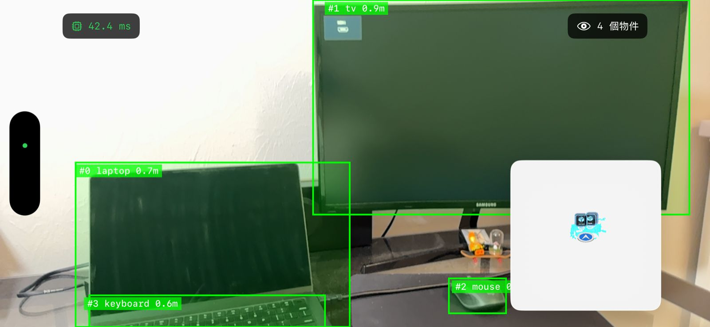
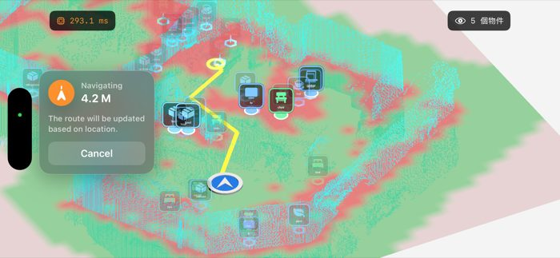
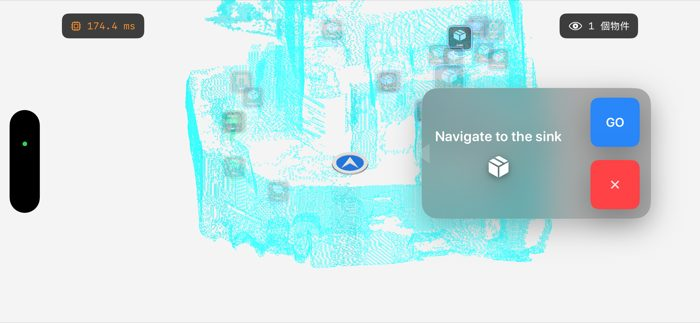
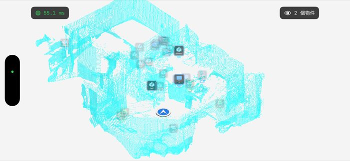

iOS · ARKit · Machine Learning
AR Navigation System
On-device edge ML for real-time object localization, persistent spatial landmark storage, and A* pathfinding over AR-reconstructed environments — no backend required.

Real-time Object Detection — 42.4 ms on-device inference · 4 objects with distance labels



Overview
AR Navigation System is a fully on-device mobile application that combines real-time object detection, spatial landmark persistence, and AR-based pathfinding — all running locally without any server dependency.
The system runs object detection through CoreML and ONNX Runtime, achieving zero-latency inference by eliminating network round-trips. Detected objects are stored as labeled landmarks in a persistent spatial map, so users can save, retrieve, and navigate back to previously seen objects across multiple sessions.
Navigation is powered by A* pathfinding computed over the AR mesh that ARKit reconstructs from the physical environment. Routes update dynamically as the environment changes, keeping navigation stable in real-world conditions.
Key Features
Zero-latency On-device Inference
Object detection runs entirely on the device via CoreML and ONNX Runtime, achieving ~42ms per frame in real-world testing. No network request, no server — fully offline.
Persistent Spatial Landmark Storage
Detected objects are stored as labeled landmarks in a spatial map. Users can save, retrieve, and navigate back to previously detected objects across sessions — even after closing and reopening the app.
A* Pathfinding on AR Mesh
Navigation routes are computed with A* over the mesh geometry that ARKit reconstructs from the real environment. The algorithm adapts to the physical layout of the space rather than relying on a fixed map.
Dynamic Route Updates
Routes recalculate in real time as the AR mesh updates, keeping navigation stable as the user moves through changing environments.